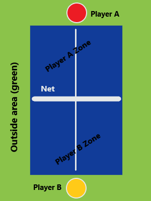

Outdoor-Game Variation Rules
Introduction
This page's purpose is to explain variations of games that we like to play outdoors. This is a group project and the rules have been established over a lot of experimenting. The question arises: why create these alternative rules? Either because it's: A. Too complicated. B. The rule is stupid. C. The rule isn't great for the circumstance. This is the default template for these variations although obviously they can be changed, do whatever you want.
Ping Pong
The following is a diagram of a ping pong table (as a warning to anyone who accidentally stumbled on this: no, these aren't the actual rules):
Figure 1 - Diagram of a standard ping pong table, its surroundings, and two players.
- Everyone must agree any for rule modifications.
- When serving the ball, it must first bounce once in the player that is serving's zone, and once then in the zone of the opponent player (if Player A serves then the ball must bounce in Player A's zone then Player B's and vice versa for Player B). If this sequence is not followed but the ball was touched by the serving player's racket (e.g ball only touched player A's zone and then fell off), then the opponent gains a point.
- If the player hits the ball and either makes the ball bounce in the opponent's zone more than once, or it bounces one or more times and then falls off the table, then the player scores.
- If the player hits the ball and it goes off the table without bouncing or it hits the player's side once then either goes as normal or goes off the table then the opponent scores a point.
- If the player hits the ball, and the ball would fall off the table but the opponent hits it back mid-trajectory, no points are gained and the game continues on as usual until a point is properly scored. Hitting the ball back without letting it falled is a purely optional courtesy from the opponent and shall be thanked by the player.
- If the player hits the ball and it hits the net and completely stops or ends up on the side of the player, the opponent gains a point.
- If the player hits the ball, and it hits the net but keeps going onto the opponent's side as if nothing happened, the game continues on as usual until a point is properly scored.
- If the ball comes in contact with any interference (such as an object on or above the table), the point shall be cancelled and the game replayed.
- If there is uncertainty in the rules of scoring a point, the game will not be counted and a second chance will be allowed.
- There are no "second serves" unless the ball hits the net and then "continues as usual" in which case it can be cancelled.